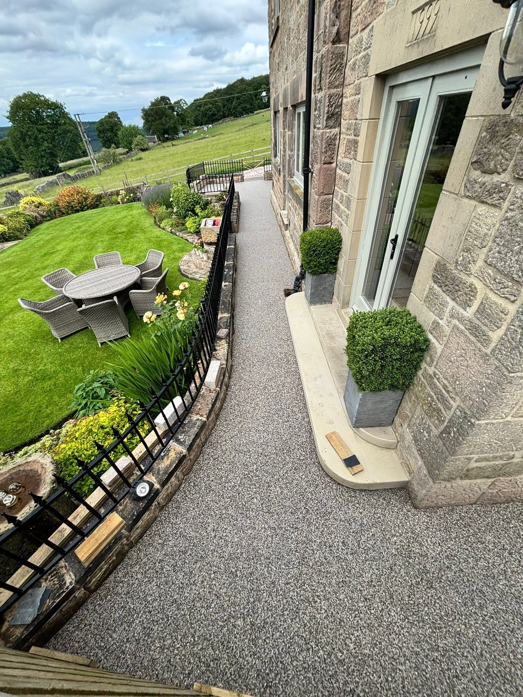
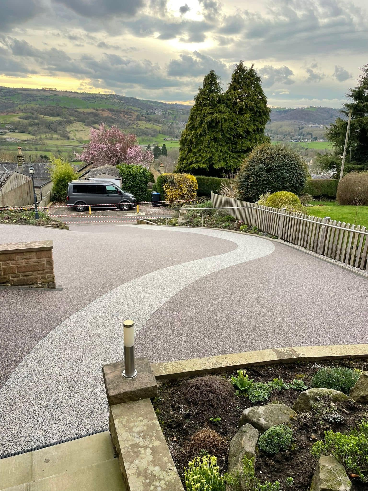
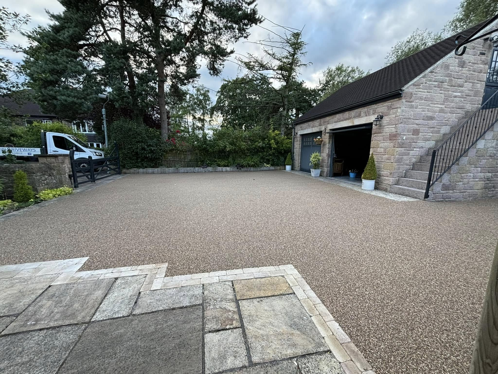
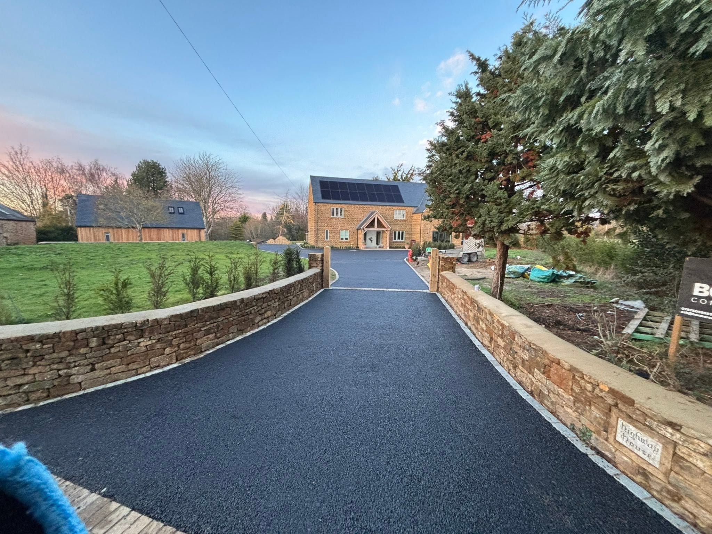
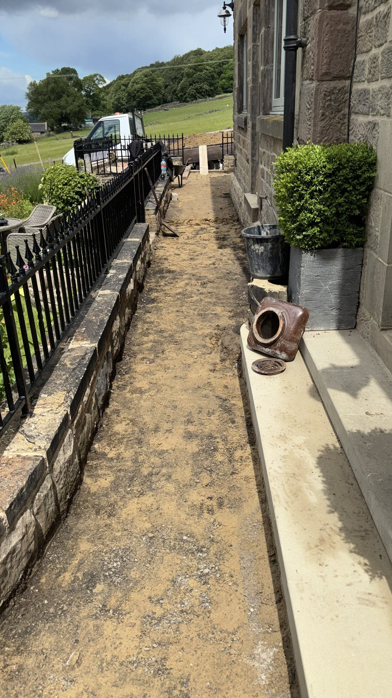
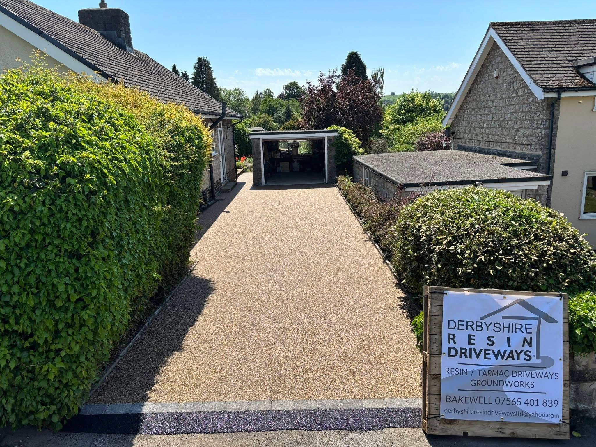
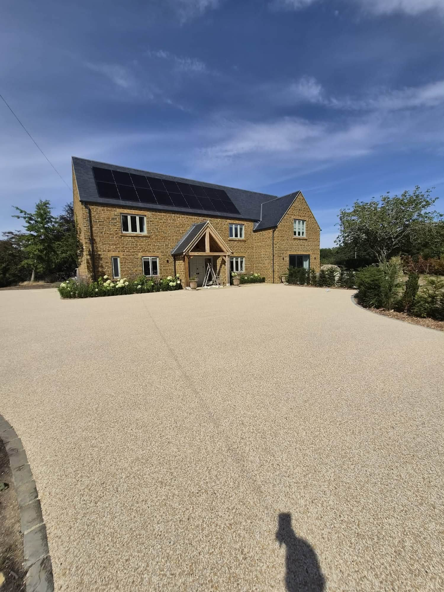

Resin Paths in Derbyshire
Resin Paths in Derbyshire
See finished resin paths and preparation work from Derbyshire Resin Driveways. Discuss your route, finish and property access.
Request a quote →
Resin driveways & Resin paths
Clean surfaces. Defined edges.
The photographs show light and dark aggregate finishes meeting existing paving, boundary walls and planted areas. Shape and colour can give each space a different character.
Discuss your project →

RECENT WORK
Resin Paths in Derbyshire in pictures.
See finished resin paths and preparation work from Derbyshire Resin Driveways. Discuss your route, finish and property access.


BEFORE & AFTER
From preparation to the finished surface.
Supplied progress and completion photographs show the same path alongside the house.
Discuss your project →
Derbyshire
Resin bound surfaces, tailored to the space.
Talk to Peter at Derbyshire Resin Driveways about the area you want to surface. Share the location, approximate size, existing surface and any photographs to start the conversation.
From a compact front drive to a wider approach, see different layouts in the portfolio.
Resin paths connect doors, gardens and access points around a property.
Supplied progress photographs show the work leading up to a finished resin surface.
GOOD TO KNOW
Your questions answered.
Where do you work?
Derbyshire is the supplied service area. Include your postcode so the location can be checked.
Can I send photos with my enquiry?
Yes. The form opens WhatsApp with your details. Attach photos of the space before sending.
How do I get a quote?
Call 07565 401839 or send the work details through the WhatsApp form. You can discuss the project and next steps directly.
REQUEST A QUOTE
Tell us what you have in mind.
Send the details of your project and its location. WhatsApp opens with your enquiry ready to send, where you can also attach photos.
Derbyshire Resin Driveways
Ready to discuss your project?
Derbyshire